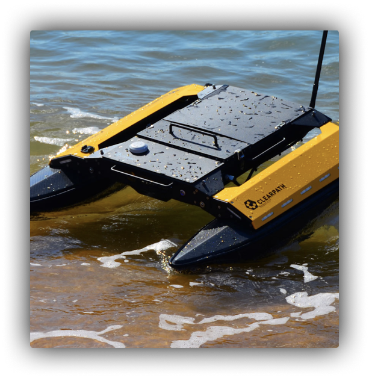

Pisces V est un sous-marin d'exploration océanique submersible habité, qui est alimenté par batterie. En août 2002, Pisces V et sa sœur Pisces IV ont découvert un sous-marin japonais de la Seconde Guerre mondiale à l'extérieur de Pearl Harbor, celui-ci avait été coulé par le Destroyer USS Ward.
U-Boot est l’abréviation d'Unterseeboot qui signifie sous-marin en allemand. Mené par la Kriegsmarine leurs attaques prirent fin au milieu de 1942. Les Alliés utilisaient mieux l'asdic (ancêtre du sonar) permettant de capturer le 9 mai 1941, le sous-marin U-110 que son commandant n'avait pas réussi à saborder. Les progrès du radar rendirent possibles les repérages, de jour comme de nuit.
Durant leur trajet vers l'Atlantique Nord, le Bismarck accompagné du croiseur lourd Prinz Eugen furent repérés et l'Amirauté britannique déploya des unités de la Royal Navy pour les intercepter. Lors de la bataille du détroit de Danemark le 24 mai, le Bismarck détruisit le croiseur de bataille Hood, l'un des plus puissants navires britanniques, et obligea le cuirassé Prince of Wales à se replier.
Interview de
Ancien Canonnier
Interview de
Famille proche d'un soldat
Interview de
Officier marin
23 mai 1926 - 18 décembre 2006
" Certains disaient que les cieux s’abattaient sur nous, d’autres que nous combattions un ennemi invisible donc invincible, je ne pouvais pas le voir mais je pouvais l’entendre, je n’oublirai jamais la frayeur dans leurs yeux"
17 juin 1975
"Mes tantes et ma mère ne le savaient pas. Mon arrière-grand-père est revenu à la vie civile, il a déménagé six fois, a eu quatre enfants avant d'être interné, à cause du traumatisme de la guerre. C'est ce qu'on appelle le stress post-traumatique”
14 mars 1926 - 6 janvier 2001
"Je tirais aveuglement selon les coordonnées que l’on me donnait. Lorsqu’il me disait “touché !”, je savais que je venais de détruire la vie de centaines de familles sans même voir un seul visage ni entendre un seul son."
Le Bismarck fut neutralisé par l'intense bombardement britannique et il coula après avoir été sabordé par son équipage ; seuls 114 marins et un chat survécurent sur un effectif de plus de 2 200. Son épave fut localisée en juin 1989 par l'océanographe américain Robert Ballard à 650 kilomètres au large de la côte française, à pratiquement 4 800 mètres de profondeur.
Coordonnées
48° 10′ 00″ nord, 16° 12′ 00″ ouest